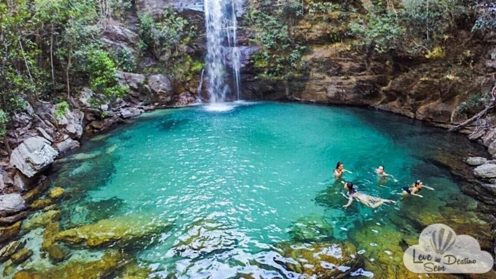

Localização
Com suas águas cristalinas e cercada por uma exuberante vegetação, essa cachoeira oferece uma experiência refrescante e revigorante. Os visitantes podem se banhar em suas águas refrescantes, explorar suas piscinas naturais e maravilhar-se com a beleza da natureza ao seu redor. A Cachoeira Santa Bárbara é um destino imperdível para os amantes da natureza e aqueles que desejam desfrutar de um momento de tranquilidade em meio a paisagens deslumbrantes.